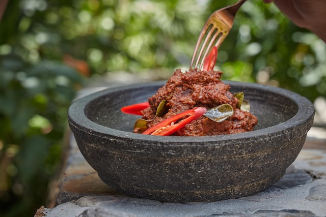

SECRET RECIPE OF RENDANG FROM INDONESIA

Description
Rendang adalah makanan terenak di dunia
Ingredients
- Daging sapi/kerbau
- Ketumbar
- Santan
- Cabai Merah
- Garam
- Masak santan ditambah dengan campuran ketumbar garam dan cabai merah
- Masukkan daging sapi/kerbaunya
- Tunggu sambil diaduk-aduk selama 5 jam
See other recipes